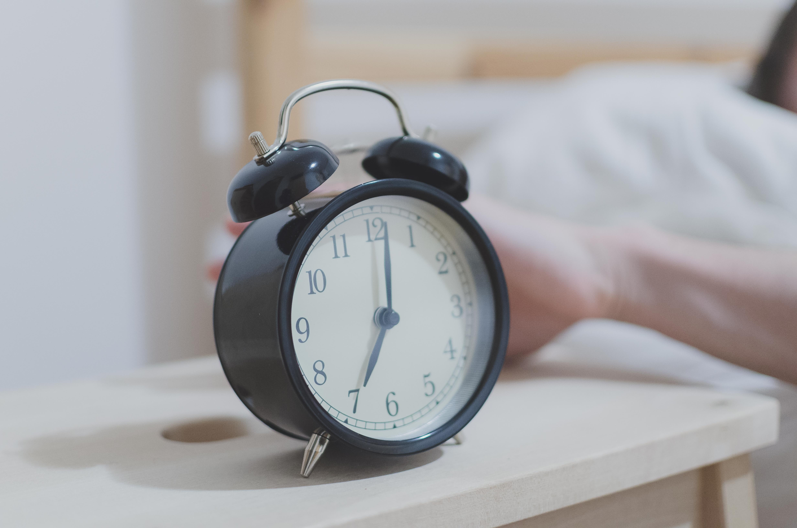

СКІЛЬКИ ГОДИН ТРЕБА СПАТИ ДІТЯМ ТА ДОРОСЛИМ
Cон – основна складова здорового життя. Дорослі мають регулярно cпати 7 або більше годин на добу. Декому, зокрема молодим людям та людям із хронічними захворюваннями, необхідно навіть більше – 9 годин сну на добу. Лише невеликій кількості людей достатньо спати менше ніж 6 годин на добу. Це зумовлено генетичними факторами.
ЧОМУ ТРЕБА СПАТИ БІЛЬШЕ 7 ГОДИН НА ДОБУ
Якщо ви спатимете менше ніж 7 годин на добу, то підвищите ризик розвитку хронічних захворювань, зокрема:
- діабету
- серцево-судинних захворювань, інсульту, високого кров'яного тиску
- збільшення ваги та ожиріння
- порушення імунної системи
- погіршення психічного здоров'я, депресії
Також недостатня кількість сну може вплинути на вашу здатність прийняття рішень, збільшити ризик виникнення аварій на дорозі, призвести до помилок.
ЯК ПОКРАЩИТИ СОН
Ваша поведінка протягом дня, а особливо перед сном, впливає на якість сну. Навіть кілька незначних коригувань в деяких випадках можуть докорінно змінити ситуацію. Кілька корисних звичок допоможуть вам поліпшити сон:
- Дотримуйтесь режиму сну. Лягайте спати та прокидайтесь в один і той самий час. Навіть на вихідних. 
- Створіть заспокійливу атмосферу. Тиха, темна, заспокійлива атмосфера та комфортна прохолодна температура в спальні сприятимуть сну. Увечері не вмикайте яскраве світло.
- Приберіть девайси. Приберіть електронні пристрої, зокрема - телевізори, комп’ютери, смартфони зі спальні або принаймні вимикайте їх за 30 хвилин до сну.
- Стежте за раціоном. Уникайте кофеїну (протягом 6 годин перед сном), алкоголю (протягом 4 годин перед сном) та великої кількості їжі перед сном. Дотримуйтесь здорового харчування протягом дня.
- Не пийте перед сном. Вгамувати спрагу перед сном можна і треба, однак надмірне пиття може спровокувати проблеми зі сном.

- Не куріть. Не починайте курити або киньте цю шкідливу звичку. У будь-якому випадку не куріть безпосередньо перед сном.
- Тренуйтесь. Фізична активність протягом дня допоможе вам легше заснути вночі.
- Використовуйте ліжко виключно для сну. Не їжте в ліжку, не дивіться телевізор і не працюйте.
Також не лягайте спати, якщо не почуваєтесь сонним. У разі, якщо ви не можете заснути протягом 20 хвилин, вставайте з ліжка.